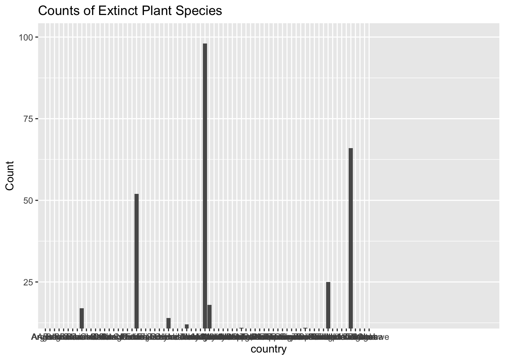

The data being worked with is from the International Union for Conservation of Nature (IUNC) Red List of Threatened Species (Version 2020-1). Florent Lavergne scrapped and prepared the Plants in Danger project to develop an info-graphic showing the biodiversity crisis plants are undergoing around the world. The data set is being used to explore the link between socio-economic activity and plant extinction. Determining if extinction risk varies by region is another potential use of the data set. Africa and Madagascar have the highest count of extinct plant species per Continent and Country with links to socio-economic disturbance in the forms of over-industrialization of green areas and disruption of natural forest (Feintrenie, 2014; Ralimanana et al., 2022). It is shown in IUCN data that over-exploitation and unsustainable agricultural practices in Madagascar are a threat to biodiversity (Stévart et al., 2019). Plant extinction varies by Continent, and a link to social or economic activity is found in Africa and Madagascar.
IUCN (2020) The IUCN Red List of Threatened Species. Version 2020-1.
https://www.iucnredlist.org
Intro
The IUCN Red List of Threatened Species (Version 2020-1) data comes from researchers who use the IUCN assessment procedure. Mosses, Ferns and Allies, Gymnosperms, and Flowering Plants were contributed to by multiple researchers as sources for the number of described species used in IUCN Red List version 2020-1: Table 1a.
Florent Lavergne and Cedric Scherer scrapped and prepared Plants in Danger data sets to make network maps that visually describe where plant extinction is taking place. The dataset is split into plants.csv, threats.csv and actions.csv. Variable types include double class, character class and description.
Adding/Reading Data into Notebook
Splitting an available data set into an exploratory and test set to test inferential claims. Then conducting an exploratory analysis using exploratory set to generate some hypotheses. Chose to do the extinct plants data set on GitHub.
Rows: 500 Columns: 24
── Column specification ────────────────────────────────────────────────────────
Delimiter: ","
chr (6): binomial_name, country, continent, group, year_last_seen, red_list...
dbl (18): threat_AA, threat_BRU, threat_RCD, threat_ISGD, threat_EPM, threat...
ℹ Use `spec()` to retrieve the full column specification for this data.
ℹ Specify the column types or set `show_col_types = FALSE` to quiet this message.
Rows: 3000 Columns: 8
── Column specification ────────────────────────────────────────────────────────
Delimiter: ","
chr (7): binomial_name, country, continent, group, year_last_seen, red_list_...
dbl (1): action_taken
ℹ Use `spec()` to retrieve the full column specification for this data.
ℹ Specify the column types or set `show_col_types = FALSE` to quiet this message.
Rows: 6000 Columns: 8
── Column specification ────────────────────────────────────────────────────────
Delimiter: ","
chr (7): binomial_name, country, continent, group, year_last_seen, red_list_...
dbl (1): threatened
ℹ Use `spec()` to retrieve the full column specification for this data.
ℹ Specify the column types or set `show_col_types = FALSE` to quiet this message.
Opened tidyverse, and then read data into quarto notebook.
library(tidyverse)
── Attaching core tidyverse packages ──────────────────────── tidyverse 2.0.0 ──
✔ dplyr 1.1.4 ✔ readr 2.1.5
✔ forcats 1.0.0 ✔ stringr 1.5.1
✔ ggplot2 3.5.1 ✔ tibble 3.2.1
✔ lubridate 1.9.4 ✔ tidyr 1.3.1
✔ purrr 1.0.4
── Conflicts ────────────────────────────────────────── tidyverse_conflicts() ──
✖ dplyr::filter() masks stats::filter()
✖ dplyr::lag() masks stats::lag()
ℹ Use the conflicted package (<http://conflicted.r-lib.org/>) to force all conflicts to become errors
Split data into exploratory and test data using code below. Did make the mistake of not deciding which environment to use (e.g. plants) but rectified this.
Are there trends in binomial name where some plants across genus are more susceptible and does this translate to other locations?
Do climates contribute to stressors associated with extinction in Asia or in other countries that share extinct plant range?
If there are reasons for plant extinction do they link to social or economic activity or is a main cause environment?
In higher stress scenarios, do the secondary metabolites activated cause chemical signals to activate in other plants and insects and in turn stress out other plants in the environment.
Data Exploration
Created a frequency table for the country variable using the count function.
exploratory_data%>%count(country)
# A tibble: 57 × 2
country n
<chr> <int>
1 Argentina 1
2 Australia 1
3 Belgium 1
4 Bermuda 1
5 Bhutan 1
6 Bolivia 1
7 Brazil 6
8 Burundi 9
9 Cabo Verde 1
10 Cameroon 2
# ℹ 47 more rows
Installed and ran the kableExtra package to change the data display. The table presents the data adequately but there are too many countries to scroll through to get a full understanding of the table results. The next step is to graph the split dataset to see what results are displayed.
library(kableExtra)
Attaching package: 'kableExtra'
The following object is masked from 'package:dplyr':
group_rows
Used ggplot() to show the amount of extinct plants per country using one categorical variable. The bar graph visually has no errors but the formatting is lacking in readability. Next step is to try and put a limiter or boundary on the count of extinct species to see which countries have higher extinct plant species.
exploratory_data %>%ggplot() +geom_bar(mapping =aes(x = country)) +labs(title ="Counts of Extinct Plant Species",x ="country", y ="Count")
Going to try the sort function to figure out how to target variables differently. My goal is to sort and place a parameter to see if I can limit the amount of countries on the x-axis to make the bargraph easier to process.
Limited the amounts of countries on the y axis using the coord_cartesian() function, and now I need to limit the amount of countries on the x axis.
exploratory_data %>%ggplot() +coord_cartesian(xlim =c(0,100), ylim =c(15,100)) +geom_bar(mapping =aes(x = country)) +labs(title ="Counts of Extinct Plant Species",x ="country", y ="Count")
Switched the category to Continent for clarity and readability.
exploratory_data %>%ggplot() +geom_bar(mapping =aes(x = continent)) +labs(title ="Counts of Extinct Plant Species by Continent",x ="Continent", y ="Count")

Trying the group_by function in a histogram. Added filter(country>25) to place a parameter on countries with less than 25 threat_HID counts. It did not work but left the line in the code chunk as a reminder to what did not work.
exploratory_data %>%count(country, threat_HID)
# A tibble: 62 × 3
country threat_HID n
<chr> <dbl> <int>
1 Argentina 1 1
2 Australia 0 1
3 Belgium 0 1
4 Bermuda 1 1
5 Bhutan 0 1
6 Bolivia 0 1
7 Brazil 0 6
8 Burundi 0 9
9 Cabo Verde 0 1
10 Cameroon 0 2
# ℹ 52 more rows
Warning: Returning more (or less) than 1 row per `summarise()` group was deprecated in
dplyr 1.1.0.
ℹ Please use `reframe()` instead.
ℹ When switching from `summarise()` to `reframe()`, remember that `reframe()`
always returns an ungrouped data frame and adjust accordingly.
`summarise()` has grouped output by 'country'. You can override using the
`.groups` argument.
# A tibble: 250 × 3
# Groups: country [57]
country threat_HID na.rm
<chr> <dbl> <lgl>
1 Argentina 1 TRUE
2 Australia 0 TRUE
3 Belgium 0 TRUE
4 Bermuda 1 TRUE
5 Bhutan 0 TRUE
6 Bolivia 0 TRUE
7 Brazil 0 TRUE
8 Brazil 0 TRUE
9 Brazil 0 TRUE
10 Brazil 0 TRUE
# ℹ 240 more rows
# A tibble: 57 × 2
country n
<chr> <int>
1 Argentina 1
2 Australia 1
3 Belgium 1
4 Bermuda 1
5 Bhutan 1
6 Bolivia 1
7 Brazil 6
8 Burundi 9
9 Cabo Verde 1
10 Cameroon 2
# ℹ 47 more rows
Used position “dodge” to try and make the labels offset across multiple rows without the other lines of code required. Rectifying this mistake in the code chunk below creates the dodge formatting but does not help decrease the label overlap.
exploratory_data %>%ggplot() +geom_bar(mapping =aes(x = country), position ="dodge") +labs(title ="Counts of Extinct Plant Species",x ="country", y ="Count")
exploratory_data %>%ggplot() +geom_bar(mapping =aes(x = country), position ="dodge") +scale_x_discrete(guide =guide_axis(n.dodge =2)) +labs(title ="Counts of Extinct Plant Species",x ="country", y ="Count")
Swapping the x and y axis is the start to increasing the label readability.
exploratory_data %>%ggplot() +geom_bar(mapping =aes(y = country), position ="dodge") +labs(title ="Counts of Extinct Plant Species",x ="country", y ="Count")
Switching the axis’ and starting at a base font size of 10 shows some tweaking is still required.
exploratory_data %>%ggplot() +geom_bar(mapping =aes(y = country), position ="dodge") +labs(title ="Counts of Extinct Plant Species",x ="country", y ="Count") +theme_gray(base_size =10)
exploratory_data %>%ggplot() +geom_bar(mapping =aes(y = country), position ="dodge") +labs(title ="Counts of Extinct Plant Species by Country",x ="count", y ="country") +theme_gray(base_size =8)
The exploratory data bar graph labeling is readable when the axis are flipped, and fonts are shrunk. The use of + signs are part of the base function of making sure the code operates correctly.
Original Hypotheses:
Are there trends in binomial name where some plants across genus are more susceptible and does this translate to other locations?
Do climates contribute to stressors associated with extinction in Asia or in other countries that share extinct plant range?
If there are reasons for plant extinction do they link to social or economic activity or is a main cause environment?
In higher stress scenarios, do the secondary metabolites activated cause chemical signals to activate in other plants and insects and in turn stress out other plants in the environment.
Refined Hypotheses:
Does plant extinction or threat level vary by Continent or Country and is there a link to social or economic activity?
In countries that have higher extinction/threat rates are there overlap in the genus and species affected?
Methodology
The exploratory analyses were conducted using a small section of data from the Plants dataset that will be used in this section. The main issue was the formatting and labeling of the data as Country names were overlapping and creating difficulty in discerning which Country had the highest count of extinct plants. ggplot(), geom_bar(), switching the axes, and font formatting worked to create a readable graph of extinct plant counts per Country.
The initial code chunks are used to determine if the full dataset is working correctly. Re-doing the steps to the exploratory analysis using the plants dataset also give credibility to the initial graphs and tables that were created by seeing if data is similar or the same. Classical methods will be used to test which Countries have the highest count of extinct plants as there is a strong assumption that Africa, Asia and the USA will most likely have the highest counts of extinct plants.
Created a frequency table for the country variable using the count function.
plants %>%count(country)
# A tibble: 72 × 2
country n
<chr> <int>
1 Angola 1
2 Argentina 1
3 Australia 2
4 Belgium 1
5 Bermuda 1
6 Bhutan 2
7 Bolivia 1
8 Brazil 10
9 Burundi 17
10 Cabo Verde 2
# ℹ 62 more rows
Installed and ran the kableExtra package to change the full plants data display. The table presents the data adequately but there are too many countries to scroll through to get a full understanding of the table results. The next step is to graph the full dataset to see what results are displayed.
Used ggplot() to show the amount of extinct plants per country using one categorical variable. The bar graph visually has no errors but the formatting is lacking in readability. Next step is to try and put a limiter or boundary on the count of extinct species to see which countries have higher extinct plant species.
plants %>%ggplot() +geom_bar(mapping =aes(x = country)) +labs(title ="Counts of Extinct Plant Species",x ="country", y ="Count")
Going to try the sort function to figure out how to target variables differently. My goal is to sort and place a parameter to see if I can limit the amount of countries on the x-axis to make the bargraph easier to process.
Limited the amounts of countries on the y axis using the coord_cartesian() function, and now I need to limit the amount of countries on the x axis.
plants %>%ggplot() +coord_cartesian(xlim =c(0,100), ylim =c(15,100)) +geom_bar(mapping =aes(x = country)) +labs(title ="Counts of Extinct Plant Species",x ="country", y ="Count")
plants %>%ggplot() +geom_bar(mapping =aes(x = continent)) +labs(title ="Counts of Extinct Plant Species by Continent",x ="Continent", y ="Count")
Trying the group_by function in a histogram. Added filter(country>25) to place a parameter on countries with less than 25 threat_HID counts. It did not work but left the line in the code chunk as a reminder to what did not work.
Testing the count function in the plants dataset.
plants %>%count(country, threat_HID)
# A tibble: 80 × 3
country threat_HID n
<chr> <dbl> <int>
1 Angola 1 1
2 Argentina 1 1
3 Australia 0 2
4 Belgium 0 1
5 Bermuda 1 1
6 Bhutan 0 2
7 Bolivia 0 1
8 Brazil 0 10
9 Burundi 0 15
10 Burundi 1 2
# ℹ 70 more rows
The count function is not giving results as clearly because there are no significant differences the count function can display to create meaning.
Warning: Returning more (or less) than 1 row per `summarise()` group was deprecated in
dplyr 1.1.0.
ℹ Please use `reframe()` instead.
ℹ When switching from `summarise()` to `reframe()`, remember that `reframe()`
always returns an ungrouped data frame and adjust accordingly.
`summarise()` has grouped output by 'country'. You can override using the
`.groups` argument.
# A tibble: 500 × 3
# Groups: country [72]
country threat_HID na.rm
<chr> <dbl> <lgl>
1 Angola 1 TRUE
2 Argentina 1 TRUE
3 Australia 0 TRUE
4 Australia 0 TRUE
5 Belgium 0 TRUE
6 Bermuda 1 TRUE
7 Bhutan 0 TRUE
8 Bhutan 0 TRUE
9 Bolivia 0 TRUE
10 Brazil 0 TRUE
# ℹ 490 more rows
plants %>%count(country) %>%filter(country>5) %>%ggplot() +coord_cartesian(ylim =c(15,100)) +geom_bar(mapping =aes(x = country)) +labs(title ="Counts of Extinct Plant Species",x ="Country", y ="Count")
plants %>%count(country)
# A tibble: 72 × 2
country n
<chr> <int>
1 Angola 1
2 Argentina 1
3 Australia 2
4 Belgium 1
5 Bermuda 1
6 Bhutan 2
7 Bolivia 1
8 Brazil 10
9 Burundi 17
10 Cabo Verde 2
# ℹ 62 more rows
Worked with Dr. Duryea to customize the format of results and create a legible display to discern the count of extinct plant species by country. The axis was switched, and then the font size was decreased to read the countries.
plants %>%ggplot() +geom_bar(mapping =aes(y = country), position ="dodge") +labs(title ="Counts of Extinct Plant Species by Country",x ="Count", y ="Country") +theme_gray(base_size =8)
#switched the axis, and then changed the font size to read the countries.
The plot changes would be useful for a smaller dataset but do not work as well with the plants dataset.
plants %>%ggplot() +geom_bar(mapping =aes(y = country), position ="dodge") +scale_y_discrete(guide =guide_axis(n.dodge =2)) +labs(title ="Counts of Extinct Plant Species by Country",x ="Count", y ="Country") +theme_gray(base_size =8)
plants %>%ggplot() +geom_bar(mapping =aes(x = continent)) +labs(title ="Counts of Extinct Plant Species by Continent",x ="Continent", y ="Count")
Plant extinction varies by Continent and Country. There was insufficient data to determine how the threat level varies by these variables. Africa has the highest count of extinct plants by Continent, with Madagascar having the highest count of extinct plants by Country. These results were middling to what the initial hypotheses suggested, as it was assumed that the USA and Asia were the Continents with the highest extinct plant counts by Continent. The results of Africa and Madagascar work to answer part of the first question as plant extinction varies. Significant threats to African biodiversity include industrial-scale activities such as timber operations, plantations, mining, and agriculture (Ralimanana et al., 2022). Major threats to biodiversity are also seen in the loss of green areas (agro-industrial concessions) that deplete natural forest biodiversity, in turn, for plantations (Feintrenie, 2014). It is shown in IUCN data that over-exploitation and unsustainable agricultural practices in Madagascar are a threat to biodiversity (Stévart et al., 2019). Plant extinction varies by Continent, and a link to social or economic activity is found in Africa and Madagascar.
Conclusion
Refined Hypotheses:
Does plant extinction or threat level vary by Continent or Country and is there a link to social or economic activity?
In countries that have higher extinction/threat rates are there overlap in the genus and species affected?
The data being worked with is from the International Union for Conservation of Nature (IUNC) Red List of Threatened Species (Version 2020-1). Florent Lavergne scrapped and prepared the Plants in Danger project to develop an info-graphic showing the biodiversity crisis plants are undergoing around the world. The data set is being used to explore the link between socio-economic activity and plant extinction. Determining if extinction risk varies by region is another potential use of the data set.
The data set initial questions were broadened to potentially address general themes that could be seen in both the split data set and the full data set. Country and Continent plant extinction rates were compared using different graph and formatting techniques. The exploratory data was easiest to understand using a bar graph but needed some formatting help. In the exploratory data set, the highest plant extinction counts for Country and Continent were seen in Madagascar and Africa. The plants data set showed the same trend with Madagascar and Africa having the highest counts of extinct plants using the data taken from IUCN and scrapped by Florent Lavergne.
The initial questions were refined into asking if there were a link between plant extinction rates variation and the socio-economic state of the Country and Continent. Further research and potential data collection could focus on if there are overlap between genus and species affected by higher plant extinction counts and threats. Variables like climate zones for each species in the country could add some insight to what places have higher rates of biodiversity crisis.